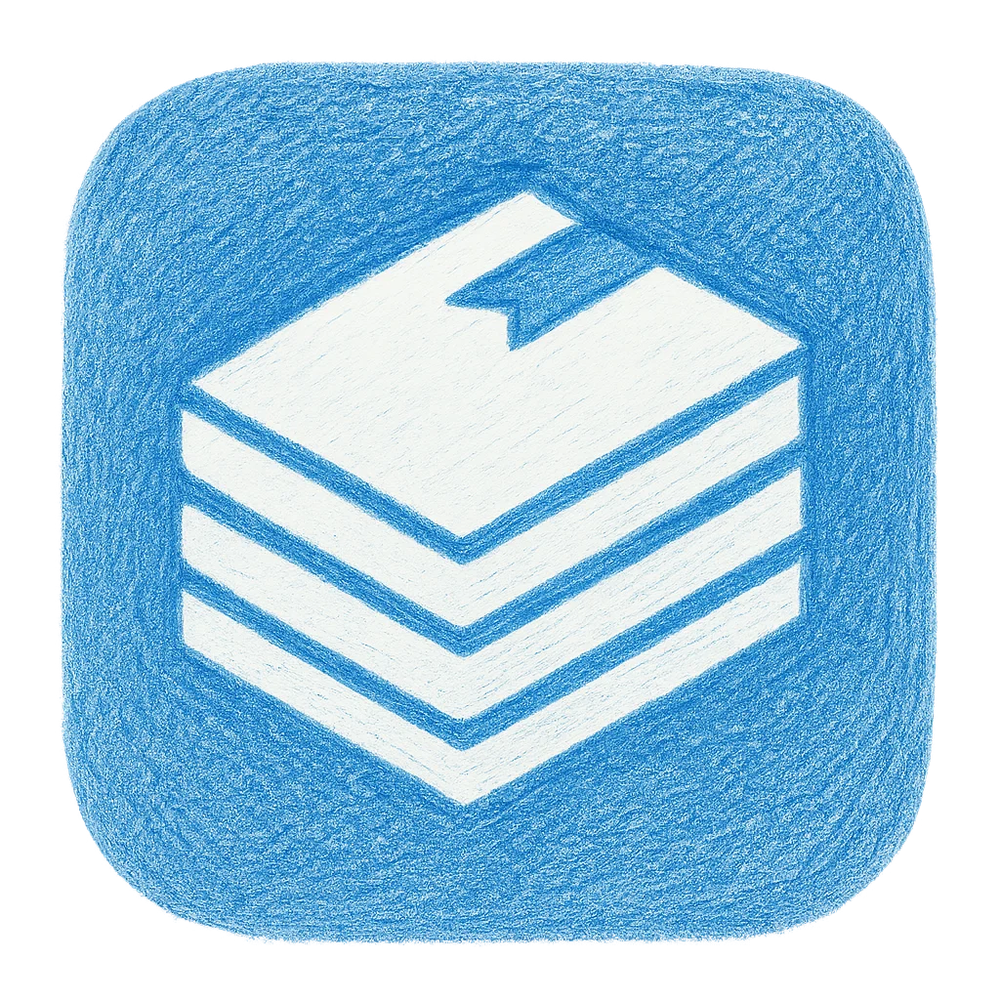

Documentation collaborative
Je documente mon apprentissage et mes découvertes techniques avec Bookstack, un outil de documentation open source. L'objectif était de partager ce que j'avais appris lors de ma formation pour aider mes collègues, puis j'ai décidé de continuer pour que ce soit utile à d'autres.
Points clés
- Tutoriels simples et détaillés
- Astuces découvertes au fil du temps
- Explications sur les logiciels libres
- Partage d'expériences et de solutions